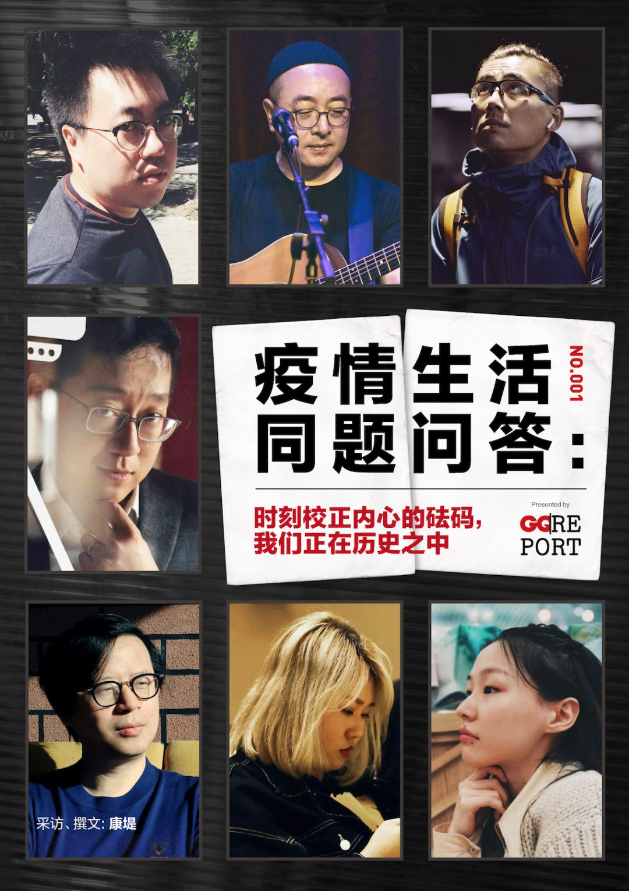
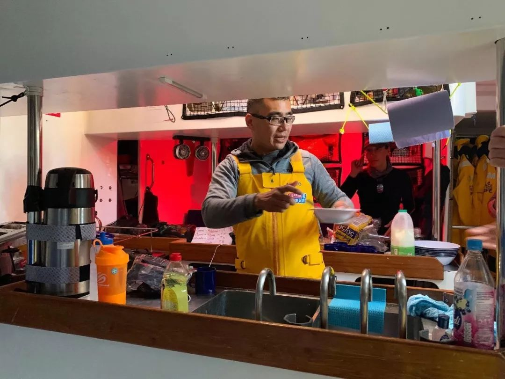
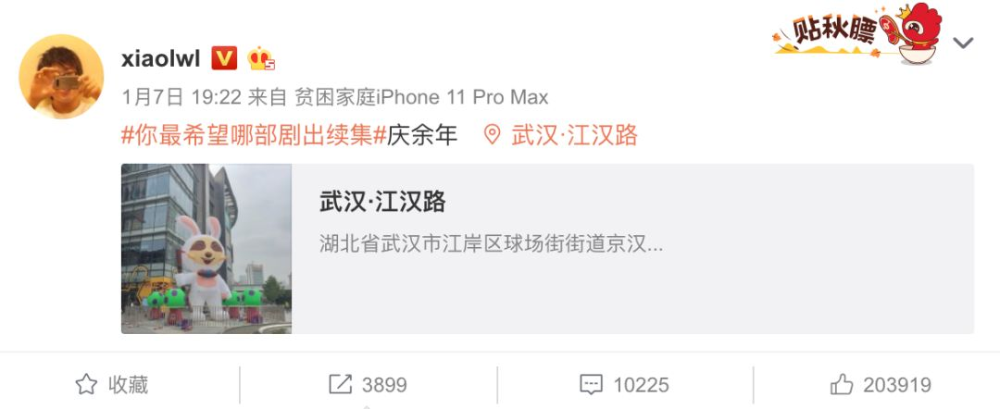

一个小工厂主的艰难复工之路
原文链接 备份链接 以下文章来源于我是南七道 ，作者南七道 疫情，让老蔡这样的小微型企业措手不及。而开工之路，更是遥不可及 *******文｜ 南七道******* 广东随处可见的小工厂（南七道2019年摄） 受疫情影响，最近包括 …

疫情风暴之下，相互隔离的日子里，日常生活似乎被搁置起来。GQ报道设置了一组问题，邀请一些朋友聊聊在疫情后方，作为个体、作为公民的你我——
作家班宇写了一篇小说，在疫情中重新审度文学的价值与意义；
电影人关雅荻在海上漂流20多天，上岸后为发生的一切感到诧异；
朴实无华且枯燥的“朱一旦”制作了视频《一只劳力士的回家之路》，问出口罩难题；
短视频博主李雪琴陷入自我怀疑，为新的表达方式所苦恼，为此她耗费6个小时在家里绕圈两万步；
演员金靖在减肥，在为疫情一线的故事哭，但这两天逐渐找回了平静；
音乐人张玮玮在初五夜晚看到了全城的烟花，但分不清情绪是幸福还是悲伤；
编剧王倦在赶一位医生生前最想看到的《庆余年2》……
回到生活日常，回到职业角色，回到公民身份，每个人都在历史之中。身为普通人的你我，或许渺小而无力，但我们还可以努力记录，校正内心的砝码，从中获得启发，期盼春天的到来。
就像王倦说的，经过这段时间，当我们再次在街上遇见，即使不认识彼此，我们也都是共渡难关的战友，到时候请互相点头微笑吧。
···············
❶
***日常***
GQ报道：目前的日常状态是怎样的？持续了多长时间？有没有做一些平时不会做的事？
班宇：七点半左右醒过来，洗漱，吃早饭，读书或者看电影，间或刷着新闻，与朋友聊几句，偶尔午睡，做饭，晚上六点吃晚餐，读书或者写作，到八九点钟，开始自己喝酒，直至午夜。
在此之前，我几乎从不独自饮酒，没有必要，但疫情开始后，经常整夜无法入眠，我希望能睡个好觉。塞林格在小说里写过，只要一个人真正有了睡意，那么他总有希望能重新成为一个——一个身心健康如初的人的。我无比渴望睡意。
疫情发生时，我给朋友推荐丹尼尔·笛福的《瘟疫年纪事》，新新闻主义式的虚构作品，形容逼真，技巧十分现代。灾难发生时，古今无不同。祈祷者、江湖术士、占星家等逐一登场，到处都是数字，而数字并非新闻，它只在上升又上升，疫区变成另一种“荒岛”。有时在微博上看见那些求助者的信息，感受更深，像是鲁滨逊渴求着一位能与之交谈的同伴，或者说，并非交谈，甚至是将要溺亡，而大多数时刻，我们只是眼看他们在一点一点地失语、陷落。所能做的，也不过是尝试着将声音传向更远处，而那里会不会有行动和回应，完全是未知的。
我总在提醒自己，发声不是义务，却是所有人的权利，以及，在任何意义上，这种行为都不会是一针自我的安慰剂：我们所要扮演的角色远不止于一位传声员。除此之外，这些天里，我还试着重读马尔克斯的《霍乱时期的爱情》，两次，均未读完，这本书太令我心碎了。读着几近崩溃。年龄越长，便越是软弱，越是不堪，越是一塌糊涂。当然，我也在努力克服。
朱一旦：作息变化不大，我没有睡懒觉的习惯，不过熬夜没落下。偶尔做饭，但是手艺一般，毕竟平时外卖什么都能点到。网上的那些电饭煲蛋糕之类的也试过，但是效果不咋地。
关雅荻：从2019年9月1号开始，我一直在参加为期11个月、共15场分站的克利伯环球帆船赛，我是11艘赛船中青岛号的环球媒体船员。2020年1月20号，我从澳大利亚Airlie Beach出发，再次靠岸菲律宾的Subic Bay已经是2月14日的早晨了。
天涯海角，每次出发都没信号，通信隔绝。从上一场比赛开始，我才花钱买了一些卫星数据流量，只能发纯文字的邮件，而且按每一个字算钱，比较贵。我用来跟家人和最好的几个朋友进行简单通信。关于疫情，只是知道更新的一些数字，具体发生了什么事，在比赛期间无从得知。

2月13号傍晚，靠近陆地时，手机有信号了，我打开看到那天新增感染病例14000多，我就有点恍惚，然后再翻看之前的很多新闻报道和文章，才知道过去三周多，国内发生了太多太多。
跨洋帆船比赛的日常就是甲板值班和休息的轮替。我不需要上甲板的时候，大多在船舱内进行媒体工作，拍照、视频采访，然后就是大量的赛志写作、剧本写作还有阅读，每天非常紧凑和充实。只是刚刚完成的第5场和第6场比赛，因为进入跨赤道的无风带，船速比较慢，比赛节奏没有之前那么紧张，相对轻松一些。

关雅荻在青岛号上的日常
李雪琴：回家前我以为我就放十天假，连电脑都没有带回来，现在需要工作，我只能拿一个破手机工作，手机还进水了，有一块黑的，也没法修，就只能挺着。
生活没啥影响，本来我就天天在家待着，能待老长时间。跟平常不一样的是，第一个是会看电视，第二个是我拍短视频会带着我妈，我天天就拍我妈。
我那天还干了一个特别傻的事，我想剪出来发来着，就是我在家走了两万步。我绕着我家100平的房子，一圈一圈、一圈一圈，走迷糊了就停下来歇一下，耗费6个小时，手机显示两万步。
张玮玮：我和全国人民一样，从春节开始就一直在家宅着，已经二十多天了。作为自由职业者，平时就是在家工作，所以生活没受太多影响。春节前我妈正好来云南一起过节，最近厨房就交给她了，每天都是我最爱吃的饭菜。
正月初五我就恢复如常，白天在工作室练琴听歌，晚上和家人看个电影，有几天每天一部迪斯尼动画片，全家闷在屋子里，得看些轻松的。我自己看了几部讲病毒的纪录片，去年买了本天体物理的科普书，最近拿出来接着看。这种时期学习科学知识，感觉能让自己镇定些。
金靖：最近在尝试网上看到的某一种间歇性断食：一顿吃鸡蛋牛奶红薯，一顿吃鸡胸肉西蓝花。也会做一些简单的运动，天鹅臂以及45分钟+的椭圆仪，在重温《武林外传》《还珠格格》和《知否知否应是绿肥红瘦》，特地在kindle上买了村上春树全集重看。
和（搭档）刘胜瑛互发一些关于疫情的文章，一起哭，聊减肥等。
王倦：目前生活状态和平时没有太大不同，我这工作本来就是家里办公，写字，看片，看书，娱乐，发呆，形式上大致如此。
不同的地方一个是吃饭，平时大多是外卖，现在更多是自己做，不过从来不发朋友圈，因为朋友圈里全是星级大厨水准，不敢比。再就是作息，以前作息混乱，昼伏夜出，疫情时反而正常了一些，因为要看各方新闻，关注疫情。
平时也宅，可真不出门了，又觉着对窗外充满渴望，看到阳光好都会隔窗看街道半天，总觉得哪怕阳光下无目的闲逛也是好的。
❷
***新闻***
GQ报道：每天花在微博和朋友圈多少时间？疫情之中最关注的两条新闻是什么？
班宇：刚开始时，花在社交媒体上的时间，每天近十个小时，不断刷新，再去归纳、分析、讨论。朋友笑话我说，成立了一个人的调查队。后来太过疲惫，心力交瘁，难以维持，近些天少了很多，但微博的话，三四个小时也是有的，朋友圈几乎不怎么看了。不过重要内容应该也没有错过。最关注的新闻，我只说一条，就是李文亮大夫的去世。李医生也是我好友妻子的高中同窗，作为同代人，感受太复杂了。
朱一旦：每天起码有一半时间都在这上面。毕竟我们做的是这个，对于最新消息和大家最关注的内容我们得保持敏感度。有时候也会强迫自己做些其他的事情，来调剂一下心情。
疫情中新闻太多了，刷多了会焦虑，比较关注的还是前线的最新消息。
关雅荻：目前我刚靠岸菲律宾三天，这三天对我来说是压缩式接受信息的三天。可能是特殊情况，我每天至少七八个小时，都在回看之前的微博、朋友圈文章和一些新闻报道。
最关注的新闻毫无疑问是李文亮医生。这次我们面对太多的人生悲剧和苦难，这都需要我们用很长的时间去学会面对、反思和消化，然后带着伤痛，也要再次抬起头，继续积极生活。另外就是关于电影行业受到冲击的消息，整个春节档消失了。目前整个中国电影行业尤其是影院面临着严重的生存危机。
李雪琴：日均使用微博3小时31分钟，还没平时用的多呢。一开始零散的信息涌进来的时候，你每秒钟都想去处理，但现在你慢慢地适应了这个信息强度之后，你就会把它压缩成一个时间集中处理。这不是有意控制的，是一点点进化的。
最近我把微博评论关了。起因是我有一次直播，我就被直播间里问的那些问题，弄崩溃了，我当时特别脆弱，正直播着就哭出来了。大家在说：你凭什么能当网红；你做的不好，你应该怎么怎么样；还有就是，你捐没捐钱，捐多少钱，我们不相信。
我最关注的两条新闻：第一个物资相关的新闻，因为我一直在给医院找物资；第二个是李文亮医生，我姥姥家那边都是医生，我对这个职业是有共情的。
张玮玮：最近微博上有些情绪化，很多信息都是扭曲的，所以我卸载了微博。我半年前就已经关闭了朋友圈，所以没在社交网络上用太多时间。这种非常时期，普通人让自己安静下来，就是抗疫的一种力量吧。
我每天起来第一件事就是查政府的通报，盼着新增和死亡病例能赶快降下来，生活恢复正常。除此之外最关注的就是在湖北的医护人员和居民的消息，他们在疫情最严重的地区，无法想象过得有多艰难。这段时间还在追一个武汉小伙子的vlog，封城后他一直在做志愿者，给医院和被感染的人帮忙。看着他那么坚强和善良，就觉得一切都有希望。

武汉市民@蜘蛛猴面包 拍摄的vlog
金靖：最近不太看微博，因为在2月7号之前，几乎每天都要因为新闻大哭，哭到头疼。所以这些天就选择“自私”一点，也是为了保持心情的平静。现在每天做的也只是起床看一下数字，大致浏览一下热搜。疫情之中最关注的新闻就是每天更新的数字。
王倦：每天在微博和朋友圈的时间非常少，主要是有一段时间谣言太多，传闻遍布，有些消息甚至连基本的逻辑链都不存在，就觉着多看影响情绪。

李文亮医生的微博提到想看《庆余年》续集
这些天关注的两条新闻，一个是李医生，从他的微博，突然觉得他好像就是身边的一个普通人，所以那段时间心情不太好。再一个新闻其实算是系列新闻，就是每一天的疫情报告，人数增减，天天认真在看，病情增长减缓，心情都会好点。
❸
***公民***
GQ报道：这段时间，你做了哪些跟疫情相关的事？
班宇：说来惭愧，我写了一篇小说。起因是我拖欠一本杂志的稿件太长时间了，以年为计，各方催债，实在不好意思，就逼着自己干了一个。但身处疫情之中，没办法去想别的，所以这篇小说跟疫情、武汉都有一点联系。
我在写作时，经常责问，在这样的时刻，好像总有一些事情，要比写一篇小说更重要、也更紧迫一点，但那又是什么呢？答不出来。整个过程里，也不太能写得下去，心思极乱，但我咬着牙，仿佛非如此不可。
朱一旦：宣传了一些相关的知识，捐了点口罩和现金。还跟团队拍了几个视频，再就是待在家。
关雅荻：我依然在比赛中，2月23号又出发了。目前在有限的时间里我能做的就是，邀请一些不同行业的朋友，用清谈闲聊的方式，通过直播这种形态，让更多在家中被憋闷很久的朋友，多一个放松心情的选择。
上下一心支持前线与病毒作战是一场歼灭战，但大后方如何能让公众顺利度过这段艰难时期，保护精神和心理健康，也是一场隐形的持久战。
李雪琴：我每天都在找口罩，做梦都在搬口罩，但是都发不出来货，后来我就放弃了。我唯一能买的就是医用手套，我粉丝群里有个人，他的厂是专门做医用手套的，我就购买了一些寄出去。我对疫情的贡献就仅止于此了。
张玮玮：最近做的事都和疫情相关，但好像除了躲在家里，又没什么实质的联系。想为湖北做些什么，但除了找到物资送过去，其他的似乎也没什么用。春节家人买的口罩是前几天才寄到，还是民用的防尘口罩，就别提真正的物资了。相信很多人都和我一样无奈吧。
金靖：逼着我爸每天吃鸡蛋；选择自己比较相信的组织捐款；和父母在家到现在已经待了15天，几乎天天看妈妈练五禽戏。
王倦：大概就是买口罩，半夜搜淘宝，查存量等等，后来发现自己基本都不出门，就没再继续，够用就行了。还有就是捐了点钱，数目就不提了，这时候捐钱的应该都是觉得有心无力，希望多少能帮到疫情前线，就别比多少了，心意重要。
❹
***难忘瞬间***
GQ报道：分享过去20多天的一个难忘的私人瞬间。
班宇：李医生走后的第二天，我看有一个纪念活动，大约晚上九点，在窗台上点一根蜡烛，或者打开手机的闪光灯，朝向窗外。我在家里找了半天，没有蜡烛，便将窗户打开，伸出闪着亮光的手机，同时向外望去，什么也没有，只是一片漆黑，只是趋于无限的静寂。寒风吹入，我衣着单薄，立即被打透，太冷了，冬天不知何时结束。
朱一旦：《一只劳力士的回家之路》这个视频发布那天，晚上看着视频发布成功，上热搜，粉丝刷屏保护，好多粉丝私信我们，这让我觉得做这件事是值得的。
关雅荻：离开赤道向北的一个夜晚，银河在面前打开，特别亮。我盯着一个高速移动的人造飞行器（应该是一个人造卫星），在群星中穿过，我一直盯着它看，目送它远去。
宇宙中的群星，人类站在地球表面来看，密密麻麻，就像大都市街头拥挤的人群，但其实每一颗星之间都隔着浩瀚的宇宙空间。我希望此刻，无论从事什么职业，选择什么样的生活方式，我们心与心的距离都能再近一些。
李雪琴：比较难忘的瞬间其实是我和我妈躺在长沙发上睡觉，只有一个毯子，那个毯子特别长，我俩一个在沙发这头，一个在那头，我俩的脚正好能稍微错开点。醒了之后我妈就问，你饿吗，我妈一天能问我八遍，你饿吗。
张玮玮：我住在云南的一个小城市，这里还没有禁止放炮。初五我和家人站在阳台上看烟花，家人心情都挺好，几天来终于有了些节日的气氛。我家在山坡上，几乎能看到全城的烟花，看着看着我突然就哭了。我也分不清是因为幸福还是悲伤，月儿弯弯照九州，几家欢乐几家愁。那么多人正在灾难中无助地挣扎，而我们的幸福就像偷来的一样。
金靖：前几天最难过的时候，发了一条内容很丧的朋友圈，很久没联系的一个朋友发来鼓励的微信，跟我说“你不可以这样”。
王倦：我想了想，完全没有，倒是被新闻报道感动过，愤怒过，无奈过，有情绪波动，但私人生活，没有突发事件。其实这大概是好事，正常的活着，已经很幸福了，我希望就这么宅着，直到看到疫情消退。也希望每个人都能平平常常，无惊无险地度过这段时间。
❺
***职业***
GQ报道：你所在的行业、领域（或个人工作）受到了什么影响？为此做了什么？
班宇：本来，我计划在今年三月份发一本新书，但其中部分稿件始终没有处理完，想趁着春节假期，专心工作几日，进行一番调整与修改，以便按时发书。但目前来看，可能还要往后拖，这个情况下，我不太能进入状态。
疫情时刻相当独特，许多伦理需要重新确认，文学的价值与意义也要再度审视。我为此所做的，就是什么也没做，只是想一想这些问题。不能完全清楚，但也无法停止。这些天里，我也总能记起陆忆敏以前的一句诗：我站在你跟前，已洗手不干。
朱一旦：我有个做线下活动为主的广告公司，那肯定受影响很大。也算个契机吧，把线上的业务做起来。其他的业务也有受蛮大影响！不过能有更多时间停下来，也是个很好的事。
对于做内容的公司而言，最大问题就是没有办法及时完成拍摄，所以我们推出了朱一旦的二维生活，算是给了大家一个缓冲，之后在条件允许的情况下略显艰难地完成了拍摄，效果还不错。
关雅荻：电影行业整个产业链遭受的打击都是巨大的。比如，全国目前6万多张银幕，一万多家影院，将会受到很大影响。
而影视行业的制作拍摄，也几乎全部暂停。我跟几个电影同行简单交流过，大家基本在家写剧本，或者做项目的前期策划。我用一年的时间在环球帆船航海比赛，想的就是写一个跟我生活经历有关的帆船题材的电影剧本。
李雪琴：一些制作很精良的自媒体可能就断更，做短视频的，这段时间的日活其实在哇哇涨。对于我来说，影响不是很大，手里还有点存货一直没剪出来，唯一急的就是没有办法拍东西。
最大的影响可能是心态，在这么大的社会事件面前，我越来越觉得我的工作对社会没有什么价值，没有什么贡献，我越来越怀疑我工作的意义了。
可能有人会说，在大家都很丧的社会情绪下，你拍点有意思的东西，让大家开心一下，这也是价值，但在这样大的动荡面前，我没法说服我自己。
张玮玮：我原计划是4月去北京排练，5月开始演出，目前看恐怕都要延期。音乐圈的人都在面对这类情况，就算疫情结束，现场演出也不会立刻恢复。我经过2003年非典，那年北京的很多乐队解散，也有些演出场地倒闭。我想这次也一样，对音乐行业的人会是一个考验。
对于我来说，问题倒是不大。四处演出的生活很浮躁，在工作室里待一年挺好，毕竟创作才是最重要的。
金靖：没有什么影响，因为每年也都是过完年之后再过一段时间才开始工作，而且现在大家都待在家里。好好在家锻炼身体，减肥。可能过不久，和我妈一起练五禽戏。
王倦：所在行业的影响，要从两方面说，作为编剧来说，看上去没太大影响，毕竟平时也不用上班打卡，电话会议和微信就足够完成工作上的对外交流。可要从大环境来说，整个影视行业，影响很大，项目停滞，剧组解散，太多实质性工作无法继续，但这是天灾人祸，是计划外的事件，我们能做的，也就是坚持下去，希望春天尽早来临。
❻
***启发***
GQ报道：这段时间的经历带给你的启发是什么？
班宇：用一位朋友的话说，疫情混淆或调校了我们关于对错的标准，也不是如此，只是让这个标准变得更清晰、更明确了。而现在谈所谓的启发，为时尚早，我无法像写读后感那样去简单做以总结，它带来了什么，我们失去了什么，它告诉给我们什么，我们又要记住什么。不是这样的。必须时刻校正内心的砝码，我们正在历史事件之中。
朱一旦：作为老板来说，要提前准备好应急措施，应对突发状况；作为个人的话，就是得培养几个爱好，我本身是闲不住的人，一下待在家里，就只能找同事和朋友聊天，时不时去粉丝群里蹦哒两下，在微博给同事征婚等等。我想他们的内心是崩溃的。
关雅荻：印证了我一直以来的想法：人随时可能会失去所拥有的一切，乃至生命，所以应该认真去活，去活好每一天，不要给自己留什么余地，尽可能全力以赴。
我一直喜欢电影《黄金时代》里萧红说的那段台词：“我只愿蓬勃生活在此时此刻，无所谓去哪，无所谓见谁。那些我将要去的地方，都是我未曾谋面的故乡。以前是以前，现在是现在。我不能选择怎么生，怎么死；但我能决定怎么爱，怎么活。”这段时间让我更加坚信生活如是。
李雪琴：第一，没有人能教别人做人，你只能做到问心无愧；第二，“公正世界假设”，永远都是一个假设，我们能做的就是保持善良；第三，一定要存点钱，要保证自己的现金流。
张玮玮：20年内遇到两场瘟疫，而且是同样的地方再次跌倒，我想我们应该好好反省一下了。那么多无辜的人死去，变成了冰冷的数字和百分比，要知道我们和她们是一样的，都曾站在命运的悬崖边，只是这次我们运气好而已。要珍惜生活，更要负起社会责任，不能让悲剧重演。
金靖：正式开始考虑以后退休的事情，会考虑重新念书或者其他感兴趣的事情。
王倦：两件事希望自己记住，也希望大家都能记住，一个呢，别吃野生动物了，天知道啥后果。第二个呢，经过这样的劫难，希望大家将来都能对医务工作者好一点。想想之前，医闹导致的恶性事件屡见不鲜，不高兴的时候给医务工作者送去危险，困难时期让医务工作者站在危险第一线，没这道理。别唱完赞歌，又把人扔在泥沼里踩一踩。
❼
***疫情之外***
GQ报道：除了疫情，这段时间你最关心、思考最多的事情是什么？
班宇：物价算吗？我每隔两三天，都会写一篇买菜日记，详细记录每一种的价格，总共花了多少钱等。现在一棵白菜大概是二十几元，但也卖得很好，在东北上一代人的认知里，白菜能解毒。虽然也不知道我们中了什么毒，但来解一解，也不是不行。新闻里说，沈阳给武汉送去一百多吨大白菜，不知是不是也取此寓意。
我的日记给几位朋友看过。也没得到什么像样的反馈。一个朋友说道，怎么这个时候了，你还要买零食？另一个说，为什么不能买呢？为此，他俩吵了半天。我没说话。
朱一旦：新一年的发展。2020开局就是困难模式，转眼过去六分之一了。希望借这段时间大家能找到自己的定位，做好自己的职业规划，我们有了一个大众比较认可的账号，也希望我们能有更多超越朱一旦的账号。
关雅荻：作为一个电影人的职责和使命感，也就是为什么要拍电影，应该拍什么样的电影。相信克利伯环球帆船赛这一年会给我一个相对明确的思路或者答案。我现在隐隐觉得已经摸到了一点边儿。
李雪琴：我最关心，思考最多的事情是工作。刚才我说，我对自己的工作产生了严重的自我怀疑，那我会想那接下来我要做什么能降低我的这种愧疚感。
我一直在想有什么新的表达形式，把这种我个人感觉门槛比较低的活儿，能跟我所期待的给社会做点贡献的价值感捏起来。我一直非常非常喜欢黑色幽默，但是我做不好，功力不够，然后加上不够直白，受众可能比较窄。还没有想好一个特别完整的出路，但还有另一种结局就是我不干了，转幕后。
张玮玮：最关心的还是自己的工作。2003年非典过后，北京很多演出场地关门，大批的独立乐队解散，我当时所在的两支乐队也遇到了同样的命运。今年不知道有多少人将要度过艰难的日子，其中可能也包括你和我。
金靖：运动吧。那这么说我最关心和思考最多的应该是如何成为一个“美丽的坏女人”。
王倦：都这大情况了，我还能关心啥啊？美国流感非洲蝗灾也都注意到了，可最终关注点还是回到疫情上来，2020，世界给我们考验，让我们重新审视自己的生活。上街闲逛，和人见面，吃饭，聊天，看看电影，亲人相聚，很想念这样的日子，当时觉得平常，现在想想，是多幸福。
还有就是，宣传里一直看到英雄两个字，其实我希望这场大事件中，英雄少一点，因为英雄往往需要自我牺牲，常常带着遗憾，我更希望他们就是医生，护士，是要痊愈的患者，是一个个好人，一个个普通人，劫波历尽，依旧回到普通人生，继续欢笑，不留伤痛。
❽
***变化***
GQ报道：这20多天前后，你自己有发生什么变化吗？
班宇：没太大变化。疫情期间，我曾忧虑许多朋友，种种忧虑又因无计可施，变成一种对于过往的追缅。这种回忆，往往也其映衬出某种未来性，从而将此刻的不确定与困惑再度加深。如一场战役，士兵持戟上阵，在拼杀时，想到的却是故乡风物，以及对于荣归后的憧憬。这样一来，此刻便更显模糊，我所刺向的，到底是什么呢？
朱一旦：你们是想问我胖了没有吧！没有。
关雅荻：主要是情绪上的改变。我性格一直比较大大咧咧，看起来是那种活得没心没肺的人。环球帆船赛对我来说，除了通过艰难、消耗巨大体力和精力的方式跨越海洋，也是对个人精神世界的拓展。经历这次灾难后，心情会复杂很多，会更加觉得生命宝贵，人生下半场要更加聚焦在自己认为值得的人和事情上。
李雪琴：并不和疫情直接相关，我比二十多天前更加脆弱了，心理防线有点崩塌。这段时间我发现，这个世界不讲理的人集中式涌现，比我想象的还要多，无缘无故地指责、羞辱、谩骂。最近我有点PTSD，就是手机一对着我，我就难受，我再高昂的情绪，一到要拍视频，我马上就down下来。
张玮玮：目前看最大的变化就是：发胖。
金靖：好像瘦一点了。
王倦：这20多天，我自己的变化，应该是胖了，我没量，但是心里清楚…………
❾
***期盼***
GQ报道：疫情结束首先想做的一件事是什么？
班宇：独自去海边待几天。只是待着，什么也不做。
朱一旦：出差，唉。
关雅荻：我还在继续克利伯环球帆船赛，原计划如果顺利完赛，会在2020年8月8号前后返回比赛起点英国伦敦的圣凯瑟琳码头。然后希望这次筹备的航海故事尽早启动。
李雪琴：上班。我最近在家里，一直在看各种东西，上编剧的网课，我想做点别的东西，有很多想法在我的备忘录里，我想上班把他们给落实了。
张玮玮：我要带我妈去香格里拉，爬青山涉小溪，呼吸新鲜的空气，拥抱正常运转的世界。
金靖：想去武汉，吃一碗热干面。
王倦：就想出去走走，见见朋友，不见也行，晒晒阳光，看看行人，如果工作上还债还顺利，可以考虑去其他城市走走，找个不熟悉的街道小巷溜达一圈，也就想想吧，工作还债是还不完的，我有这觉悟。
最后希望大家都能度过这段时间，也许路上我们能遇见，即使不认识彼此，可我们都是共渡难关的战友，到时候点头微笑吧。
疫情期间，在这个国家的各个角落，数不清的个人体验正在同步发生。我们希望对这段特殊时期的个人经历加以收集和呈现，以此作为一种记录与见证。图片、文字、视频……任何介质、任何形式的个人记录，都可以发送给我们。您可以选择将你的故事或者想提供的线索发送邮件至gqreport@163.com ，也可以点击阅读原文，在问卷中上传与填写您的答案。

在公众号后台回复彩蛋，送你一个彩蛋
采访、撰文：康堤
运营编辑：肖呱呱


原文链接 备份链接 以下文章来源于我是南七道 ，作者南七道 疫情，让老蔡这样的小微型企业措手不及。而开工之路，更是遥不可及 *******文｜ 南七道******* 广东随处可见的小工厂（南七道2019年摄） 受疫情影响，最近包括 …
原文链接 备份链接 “疾控要像消防一样，在疫情处置中有决定权、处置权”从大年初六（1月30日）开始，中国疾控中心首任主任、北大公共卫生学院教授李立明再次“出山”，带领一批国内公共卫生领域的骨干们集中办公。他率领的这个团队的名字叫“中华预防 …
原文链接 备份链接 这是一封伦敦的来信。 作者是在英的老朋友，武汉人。 如她所说，现在像是无法返巢的候鸟。 黑山羊。六角手风琴。烟雾。 穿着白色长裙的小女孩从舞台中央站立起来。年长的人们摘下黑面罩。幕布被掀开。海洋气味的雨水从混合的乐声中 …
原文链接 备份链接 《创新经济战疫计划》，是燃财经在新型肺炎疫情期间推出的特别栏目，关注创新经济企业遇到的新难题、商讨应该采取的新对策，希望能够帮助中小企业一起战胜挑战、把握机会。 作者 | 唐亚华 编辑 | 魏佳 疫情下的健身行业，正在 …
原文链接 备份链接 各级政府的绩效考评正在从“增长锦标赛”逐渐转为侧重治理能力、治理体系的新绩效评估框架，这次疫情可能是转折点。如何提升市场应对突发事件的能力和韧性，也是体现国家综合治理能力提升的重要标志 2020年2月12日，位于武汉体 …